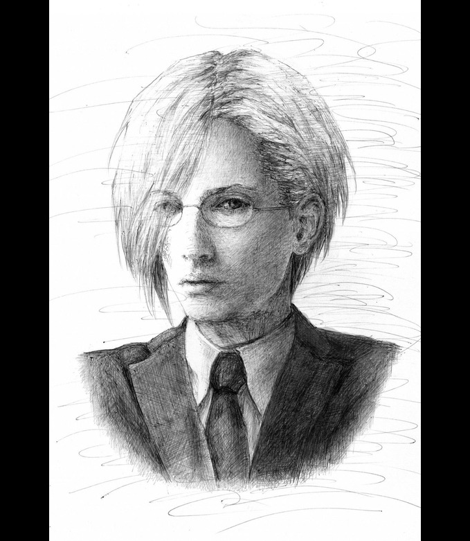
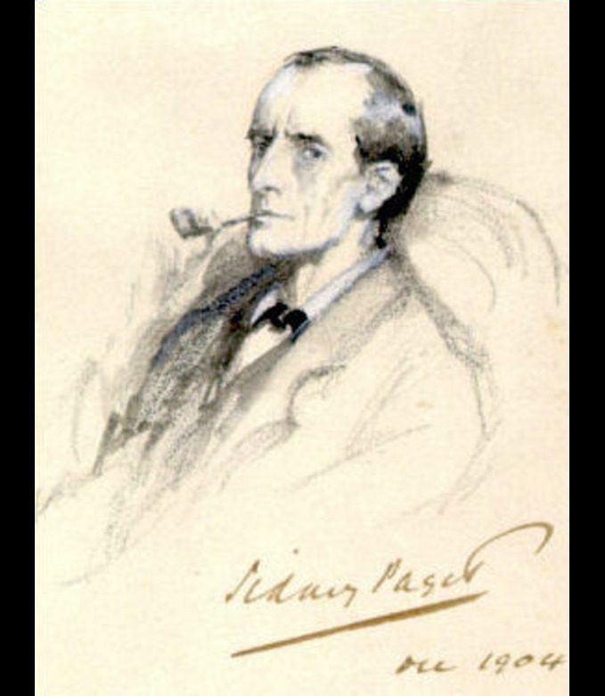

Sherlock Holmes (/ˈʃɜːrlɒk ˈhoʊmz/) es un detective ficticio creado por el autor británico Arthur Conan Doyle. Refiriéndose a sí mismo como un "detective consultor" en sus relatos, Holmes es conocido por su destreza en la observación, la deducción, la ciencia forense y el razonamiento lógico que roza lo fantástico, habilidades que emplea al investigar casos para una amplia variedad de clientes, incluyendo a Scotland Yard.
Londres a finales del siglo XIX era un hervidero de secretos, sombras y callejones oscuros. Entre el humo de las fábricas y el bullicio de los mercados, Sherlock Holmes y el doctor Watson se veían arrastrados una y otra vez hacia los juegos mentales del profesor Moriarty. Este último, oculto tras una fachada de matemático honorable, manejaba una vasta red criminal. Cada pista parecía un callejón sin salida, cada mensaje cifrado los empujaba hacia un nuevo enigma, como si toda la ciudad fuese un tablero de ajedrez en el que Holmes y Moriarty disputaban la partida final.
Tras descubrir documentos falsificados en un banco, Holmes comprendió que el plan de Moriarty se extendía más allá del simple robo. Con la ayuda de Watson, vigiló discretamente las reuniones de extraños personajes en clubes privados. El detective intuyó que detrás de cada firma, cada cifra, cada cálculo matemático, se escondía la mano maestra de su eterno rival. “El mero pensamiento”, anotó Watson en su diario, “llenaba de tensión el alma de Holmes, consciente de que un movimiento en falso podía significar la ruina de todo Londres”.
En una carta dirigida a Watson, Holmes confesó que llevaría un brazo en cabestrillo para evitar que lo obligaran a firmar documentos en su viaje. Además, se cubrió parte del rostro con vendas, alegando una enfermedad. De ese modo ocultaba su identidad y limitaba las conversaciones con desconocidos. Con un sombrero de copa y unas gafas verdes, completó el disfraz. Se arrodillaron juntos en Baker Street, oraron en silencio y dieron “un salto desesperado hacia la confrontación inevitable”.

En la estación de Charing Cross, Holmes adquirió billetes rumbo al continente. Cuando subió al vagón, notó a un extraño observador en el andén: uno de los hombres de confianza de Moriarty. Disimulando, Holmes se hundió en su asiento y apartó el rostro de la ventana. El agente recorrió los vagones con ojos inquisitivos, pero jamás sospechó del caballero vendado que fingía debilidad. Justo cuando parecía descubrir la verdad, el silbido del tren interrumpió la tensión y el convoy partió entre el vapor.
En el vagón contiguo viajaba una dama aristocrática, amiga cercana de Moriarty, que había visitado Baker Street tiempo atrás. Holmes contuvo el aliento al verla, consciente de que un simple gesto podría delatarlo. Sin embargo, su disfraz lo protegió de cualquier sospecha.

Ya en el puerto de Dover, los viajeros embarcaron hacia el continente. Durante el desayuno en cubierta, el capitán del navío, sin sospechar nada, advirtió a Holmes de los “peligrosos revolucionarios” que podrían tentar a su sirviente para escapar. Todo era una ironía amarga: en realidad, el verdadero peligro era Moriarty, cuyo alcance superaba fronteras.
Al intentar comprar billetes rumbo a Suiza, Holmes y Watson enfrentaron un obstáculo. El vendedor, sospechando de las vendas y del silencio del caballero, se negó a completar los documentos. Holmes calculó que Moriarty había dado órdenes de retrasar su paso por cualquier medio posible. El destino quiso que un diplomático amigo interviniera, dando fe de la identidad del viajero y firmando en su lugar. La red del crimen estuvo a punto de cerrarse, pero la providencia les abrió paso.
HINT: visual cryptgraphyAllí, Holmes y Watson fueron retenidos por la policía local, instigada por rumores enviados desde Londres. “No los dejaremos continuar”, dijo un oficial con firmeza. Holmes, sereno, confió en que el destino aún no estaba escrito. En silencio, ambos se prepararon para lo peor. Entonces, una campana anunció la partida del tren y el oficial, confundido, cambió de parecer. Examinando al supuesto enfermo, permitió que pasaran. Watson anotó más tarde: “Sentimos que habíamos escapado del abismo de la miseria”.
El viaje fue una prueba devastadora para Holmes. Desde rechazar brindis con extraños hasta fingir una calma inquebrantable, su mente estaba tensada al límite. Incluso un desconocido confundió a Watson con un fugitivo y trató de detenerlo. Como predijo, ciertos agentes intentaron convencer a Holmes de abandonar a su compañero y salvarse solo. A pesar de todo, nunca rompieron sus papeles: Holmes como el caballero enigmático, Watson como el leal amigo, unidos frente a la sombra del crimen.